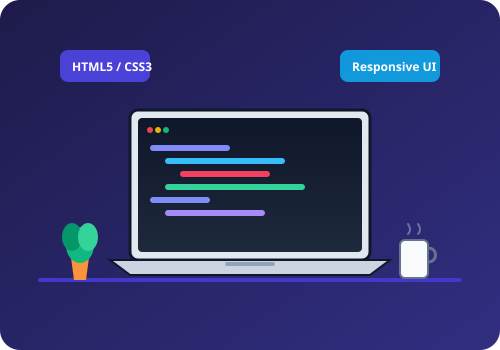

Semantic Integrity
I prioritize meaningful HTML elements over generic containers. Clear document outlines empower screen readers, search engines, and future developers to navigate software effortlessly.

"I believe that well-structured code is the foundation of accessible, performant, and enduring digital software."
My name is Syed Muhammad Sarim. I am currently an undergraduate student pursuing a Bachelor of Science in Computer Science with a focused specialization in Web Engineering and Interface Architecture.
My journey into programming began when I wanted to understand how raw lines of markup transform into vibrant, interactive web experiences on screens of all sizes. Over the course of my university studies, I have developed a deep appreciation for the web platform, emphasizing clean HTML5 semantic structures, responsive CSS layouts, and standards-compliant accessibility.
Every line of HTML and CSS I author adheres to three fundamental engineering principles.
I prioritize meaningful HTML elements over generic containers. Clear document outlines empower screen readers, search engines, and future developers to navigate software effortlessly.
Speed is a core feature. By leveraging modern CSS3 layout engines like Grid and Flexbox, I minimize unnecessary scripting dependencies, ensuring ultra-fast render times.
The web belongs to everyone. I design high-contrast color palettes, logical keyboard focus states, and scalable typography so users with diverse abilities enjoy an equitable experience.
Where I am heading and the milestones I am currently working to achieve.
Focusing on foundational software engineering concepts and university excellence:
Pioneering scalable frontend architectures in modern technology companies:
What fuels my curiosity when I am not authoring code in my workspace.
Analyzing tactical openings and endgame positions sharpens my foresight and systemic algorithmic thinking.
Reading classic computing books on clean architecture, UNIX philosophies, and user-centered interface psychology.
Sketching low-fidelity grid systems on grid paper before translating structural wireframes into semantic HTML.
Optimizing Linux distributions, setting up local development servers, and learning operating system kernels.